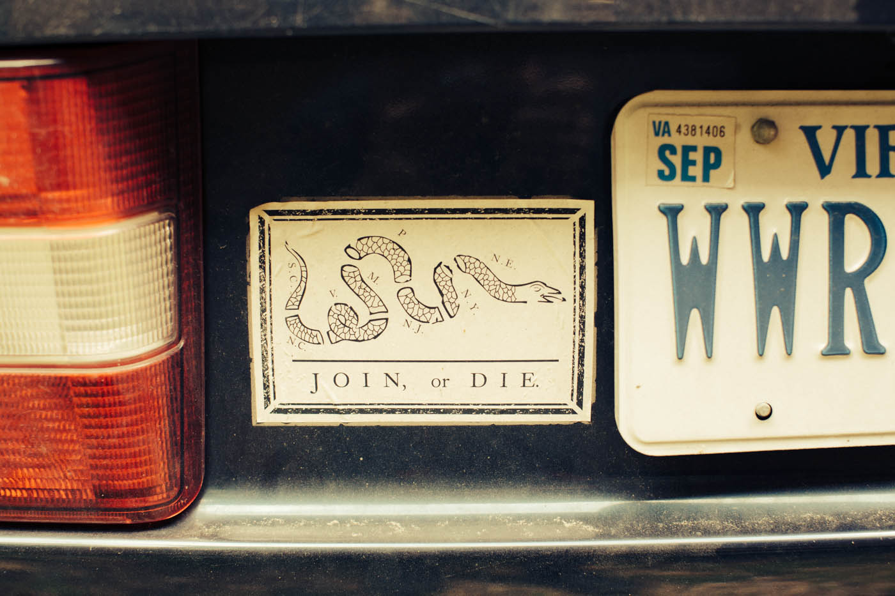

And so we arrived at Forest Floor Studios, just shy of Shenandoah National Park. It’s easy to see why Daniel Bachman, the 24 year-old Virginia native, has chosen to record here. Previous releases from the finger-picking visionary were born at Forest Floor, as is his latest and last album on Tompkins Square, Jesus I’m a Sinner.
The one room studio is unexpectedly well stocked. It's absolutely off the beaten path, yet no less legitimate for it. Surrounded by only the wind brushing through the leaves, the faint trickling of a stream, and the singing of the local bird residents, it's a fitting backdrop for the scratch and twang of Daniel's homey and rural finger-style creations.
Hellos are exchanged with Daniel, beers are opened, and we're introduced to Forrest Marquisee, the producer at Forest Floor Studios. Inside the small studio, Daniel gets to work, starting where he and Forrest left off the day before. Much of the recording is finished when we arrive on Saturday, Daniel having been at the studio for a few days already. After only one false start, Daniel records the final track for the album with the front door open, the sounds from outside creeping through the screen door.
Our remaining time is spent outside, learning about the studio, Rappahannock County, and Daniel's home state of Virginia. We head to the stream not 50 feet from the studio, and stand barefoot in it as Daniel tells us all about where we are, often pointing one way or another to a landmark that correlates to one of his songs. He knows this place well, his casual explanations clearly well worn from time and use. He enjoys sharing his love for his home, which he does most successfully through his music. Sun Over Old Rag, Seven Pines, 218 to Caledon - all song titles of his as well as references to the Old Dominion.
Forrest gives us a tour of the area including a botany lesson, complete with tastings. We all pluck a bud of honeysuckle and carefully pull out the stemen for a small taste of sweetness. We're invited into Forrest's home, just up the hill, to see his father's guitar workshop and even try our hand at a few of the fully handmade instruments.
As the morning warms into afternoon, rainclouds begin to creep across the sky and signal our time to move on. Forest Floor Studio is only the first stop of the day. In a semi-frantic rush, we help Daniel grab the last of his equipment, round up the unopened beers from the porch of the studio, and hop into Daniel's timeworn Volvo to start our trek back east, just as the rain starts to fall. The old car has served him well. This year alone, he’s spent 9 months on the road. This car has carried him across the country and back for many other years of touring and now, it carries us back east.
As we wind down the narrow lane that brought us in, the mountains give way to a flatter landscape. The brief rain has left the spring greenery damp and warm, the humidity creeping in the open windows.
Eventually, the car swings around a wide bend somewhere near Culpepper, and Daniel points out Mount Pony, a small, nondescript hill just off the highway. He tells us that, what to any passerby would appear as nothing more than a lump on the land, is actually a secret mountain fortress. "The inside is hollow. The Federal Reserve used to keep gold in there, back in the sixties and seventies." He points out a strange structure nearer the road we pass as the old guard hut.
The depth in which Daniel knows this land and these places is only reinforced as the day goes on. Few people have as visceral and strong a connection to where they grew up as he does. He's moved away before, having lived in Philadelphia for a time, but it's clear he's never really left this place, in mind or spirit. The music he creates mirrors this region in its loose style, its extreme but unassuming beauty, its charming imperfectness. Today we've been introduced to his muse and given a deep understanding of the roots of what he creates.
Our last destination is Fredericksburg. The house, Daniel's childhood home, is dim and cool, its stillness disturbed only by the soft ticking of a clock and the few bits of dust that lazily drift in the sunlight that filters through the kitchen windows. The walls are covered in treasures we don't have time to explore. There are history books, artwork, and relics of Virginia's past, each with a story Daniel could tell, no doubt.
Daniel decides against using his Guild guitar that we heard earlier in the day, instead choosing a 12-string that's perched in the living room, as though waiting for him. After a quick bit of tuning by ear, we head into the green and sunny backyard. Daniel takes a seat on the back patio with his guitar and as the sun begins to sink, we end the day in the place where it all began.
“It was never new and it’ll never get old and it’s a folk song,” says Oscar Issac as a deeply committed and crotchety folk singer in the Coen Brothers’ decidedly excellent film Inside Llewyn Davis. Though that quote will become clichéd in no time at all, it seems an apt description of the San Francisco-based record label Tompkins Square Records. “We’re different from a lot of labels because I enjoy doing archival work,” says TSR founder and owner Josh Rosenthal, “but I also enjoy working with new artists. There are labels that do one of those things well, not that many do both.”
Rosenthal, who is in his mid-40s has a lean frame and full-head of hair suggesting he’s much younger than one might assume. He founded the label in 2005 in New York City and named it after his beloved park that became the label’s namesake. Tompkins Square Records has become a refuge for serious music geeks that love timeless music. Releasing records from up-and-comers Daniel Bachman and Hiss Golden Messeneger coupled with re-issues of incredible forgotten oddities like finger picker Don Bikoff’s Celestial Explosion and 1930s rural string- band Charlie Poole and the Highlanders’ Complete Paramount and Brunswick Recordings, Rosenthal has created a perrenial label aesthetic.
“The label puts out good music and entails no political bullshit,” says 24-year old Chicago-based psych-folk guitarist Ryley Walker, who’s releasing his debut full-length album, A Home for Me on TSR in April, “I’m honored to be on the same roster as so many forward thinking musicians from the past and present.”
Folk and jazz. Rural and urban. New and old. American. TSR has released albums that fit within at least one of all of these descriptors, but Rosenthal still works the label’s discography into a cohesive whole, a rare case in which the label is as much a part of the records’ appeal as the music itself. At the heart of it is an impassioned, committed and restless label head.
Rosenthal’s father’s record collection proved to be the spark for his developing musical passion. While his father listened to a lot of ethnic music at home, it was his dad’s Beatles and Simon and Garfunkel records that resulted in an early, classic rock n’ roll fixation that would continue into his teenage years.“In the early days it was Stones and Zeppelin,” he says, “My first concert was Tom Petty. And of course Lou Reed was from Long Island. In our teens we were heavy into the Velvet Underground. Local guys.”
Growing up in Long Island, Rosenthal fell in love with music while working at his high school radio station.“We were lucky enough to have one,” he says, “This was back in the 80s when the radio was still very powerful. Pretty much the only thing in town, there was no Internet. It was a powerful and sexy medium.”
While there, Rosenthal immersed himself in the large record library at the station, discovering jazz, folk, blues and other forms of music that would later make up the bulk of Rosenthal’s record label. Along with instilling within him a passion for traditional American music, Rosenthal also credits his early days as a high school radio disc jockey with teaching him the basics of the record industry.“That’s where I started learning the business,” he says.
Rosenthal held internships with PolyGram at the age of 16 and later at CMJ. He remembers making trips to New York City and hanging out with Bill Levenson, a pseudo-famous, rock n’ roll compilation producer described by Rosenthal as “sort of the king of the box set.” From Levenson he would learn to process of assembling a set of songs into a cohesive whole, a skill that would come in hand when developing Tompkins Square Records.
Rosenthal eventually landed a job at Columbia Records working in their PR department and then a similar gig for Sony, but he soon tired of releasing music that he wasn’t passionate about. After his departure from the big leagues Tompkins Square Records would finally materialize. Eight years, six Grammy nominations and almost 100 releases later, Tompkins Square Records has become synonymous with a discernible level of excellence, making fans out of big time names like T. Bone Burnett, music producer and composer of the soundtrack for the aforementioned Inside Llewyn Davis, and Hal Willner, producer and former music director of Saturday Night Live. “When I see a record with the Tompkins Square marker I immediately buy it,” says Wilner in an interview with The Local East Village.
The record industry is as competitive as ever, and indies like Tompkins Square Records have to be careful about handling business to remain profitable or at the very least break even. Rosenthal is cognizant of these challenges. “It is really difficult to maintain profitability unless you have a real head of steam on something,” he says, “If you have a project that is really moving, a box set that’s selling and has some nice momentum on it, then you can make some money. If you’re selling an LP you’re only going to make a couple bucks per unit on it and you have to wait until you make money back on it.”
Despite the gloomy reality of the modern record industry, Rosenthal isn’t an overly tense type of record honcho, exuding warmth, relaxation and laid-back experienced cool within his speech. He chalks up the label’s growth and the discovery of new performers and old records to re-release as an organic process of word-of-mouth and solid advice.
“It’s kind of interesting how things happen,” he says, “Sharon Van Etten emailed me a few years ago and I didn’t know who she was. She said you should really check out William Tyler from Nashville and I did, but I didn’t know who she was. I didn’t even know she was an artist. But I did follow up on her tip and signed William Tyler. And then William told me about Hiss Golden Messenger and I signed him, and then Michael Taylor from that band told me he was friendly with Alice Gerard. That was like four releases that happened because Sharon Van Etten emailed me.”
Recent Tompkins Square Records releases include a re-issue of the 1968 self-titled album by Dino Valenti, once a member of seminal San Franciso-psych band Quiksilver Psych Messenger, whose solo record serves as an important early document of psychedelic folk music. Live at Caffe Lena is a collection of the best music recorded at the Saratoga Springs coffee house of the same name, a landmark of American folk music.
Newer releases, like the upcoming album by Walker, seem to be taking on a more experimental direction than previous albums, but Walker denies this, believing that all the music, new or old in some way maintains a far-out vibe.“I think when you get deep into the recordings Tompkins has released,” says Walker, “When I jam Lena Hughes, James Blackshaw of the numerous box sets of archival tunes, it’s pretty outer limits.”
Records like these tend to appeal to the music lover who peruse used record stores all day, making Tompkins Square Records artists like Daniel Bachman, who just put out his fourth LP, Jesus, I’m a Sinner all the more important for attracting the thrill-seeking younger demographic.
“What’s interesting about Daniels music is how he crosses the line between the sub-sect that are interested in that classic Americana, Jack Rose-style music but yet is featured on current sites like Pitchfork, Paste, etc.” says Rosenthal. “Seems insane that he can reach those types of audiences with that style of playing.”
Rosenthal describes Bachman as “gifted”. It is an ear for artists like Bachman that has helped Rosenthal maintain the aesthetic of Tompkins Square Records while looking forward to the future. Rosenthal has created a label that musicians believe in and want to be a part of. That, more than anything else defines what Tompkins Square Records has achieved.
“It’s just one dude who’s always a phone call away,” says Walker, “I’m looking to be a part of a label that fosters creativity and has its shit together.”
I was at Chad's records in Chattanooga and found this guy - sticker said "rare country psych - good 1972". So I was like cool. Turned out it was Thomas Jefferson Kayes band on Nashville's Good Medicine label (a subsidiary of Starday-King)? . He produced Link Wray - Gene Clark - and the first tune on this is all cried out - that was on Links Be What You Want To. The jacket to the LP is textured snakeskin and pasted illustration of band. Whole record is good except the 2nd song on A side - cheeseball Hound Dog. Thanks for Nothin', All Cried Out, and Hoe-Bus (pre recording to his first solo rec) are great. "The sun don't shine the same on every doggie's ass . . . ."
I got this record as payment for a gig in Memphis in April. Good 4 am downer vibe from Cedar Falls Iowa - Early 70's? On his own Label Old English Records. 6 & 12 String - C.F. Martin. Couple cheesy cuts but its not a stinker. You Are The Reason is the best track. Dedicated to his closest friend "Ruby"
I got the chance to go to the County/Rebel Records offices right outside of Charlottesville VA in April. Fun day looking through everything and talking. Around the time when we we're leaving we started looking through a box of LPs that were going up for sale and I asked about this one and bought it up from him. Ernest was from Powell Co. Ky and recorded 6 songs for Rich R Tone Records in the late 40's then turned his attention towards evangelism - 65 years in service and had a radio ministry for 55 years called Highway to Heaven. He passed at home in June of 2002 at the age of 88. Killer hot shit bluegrass gospel record. Just A Rose Will Do is on repeat.
I picked this up at Red Onion Records in DC back in april. Had been looking for it for a while and saw it. After Green left Fleetwood Mac he was approached to do a record. The band that he put together played a bizarre 17 hour recording session on LSD and probably a ton of other drugs. It rips so hard. Comes on real nice with some heavy wah - gets real dark. Not sure if it brings you back around or not.
I played a wedding in Cleveland and my buddy who got married gave me a copy of this. I love the Upchurch stuff. First time I heard this stuff was in Cleveland (again) during a pretty heavy snowstorm in January at my friend Matt's house. He gave us pretty strong drinks and we sat around and zoned out. Was pumped to find this in the country rows at Academy in NY. If I ever get a dog Im going to name it Randy - and when that dog dies Ill get another and name it Early.
Cabin on the cover is of Early's birthplace in Lambsburg VA - back the back cover there is a nice personalized letter from WPAQ owner Ralph Epperson and notes on the side by his daughter talking about growing up singing with her dad.
Jerry and his first solo record. Its my parents record. I threw it on the list because it rules. A side - dead standards. B side - half brainwash weirdo space back into standards. He played every instrument on the thing except for drums. How did he have the time mannnn.